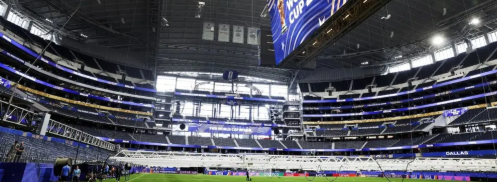

Resumen de noticias
viernes, 3 de julio
Noticias destacadas
Argentina enfrenta un nuevo desafío internacional

La Nación
El país se prepara para una jornada clave con nuevas definiciones
Hace 1 hora
Canal 7
Alerta máxima por los cambios anunciados durante la mañana
Hace 57 minutos
TN
Qué puede pasar durante las próximas horas
Hace 11 minutos
Infobae
Los puntos principales de la jornada nacional
Hace 3 horas
Ver más títulos y perspectivas